Trainer Guide — Breakout material covering M365 Copilot across mobile, web,
Teams, Researcher, Analyst, M365 apps, and custom agent building.
⚠️ Disclaimer
All prompts, scenarios, examples, and referenced entities are fictional and provided
only for training and demonstration purposes. Do not use this material for
decision-making, reporting, or external distribution.
📱
Module 1 · On the Go
Copilot Mobile App
~10 min
Take productivity on the go with the Microsoft 365 Copilot app. Demonstrate voice
interaction, day prep, and mobile Outlook integration.
Demo 1.1Day Overview & Voice▼
1Open the M365 mobile app (iOS or Android), logged
in with company credentials.
2Type or use the Voice icon to speak the prompt
below.
Try This Prompt
Prep me for my day
Follow-up (Voice)
What did [Name] ask me to cover in today's [customer name] meeting from
last week's prep call?
Follow-up
Hey Copilot, Summarize my Emails, Teams messages and channel messages
from the last workday.
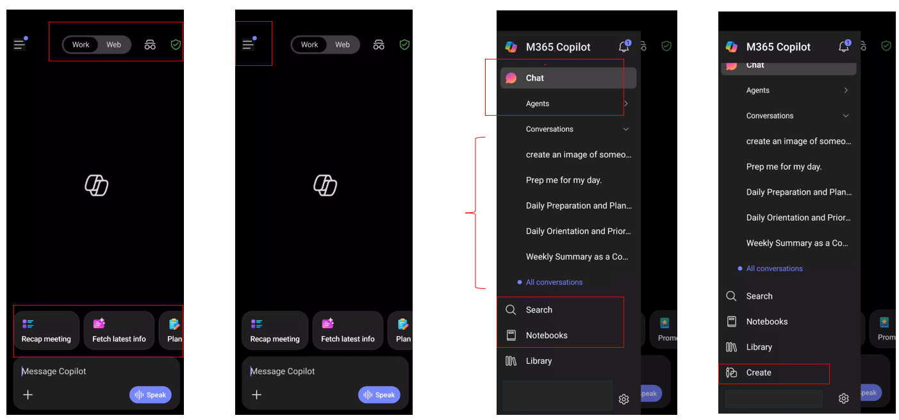
Demo 1.2Outlook Mobile & Audio Recap▼
1Open Outlook Mobile and use any prebuilt prompt:
Voice catch-up, triage my inbox, what needs my reply?, get oriented, find quick
wins.
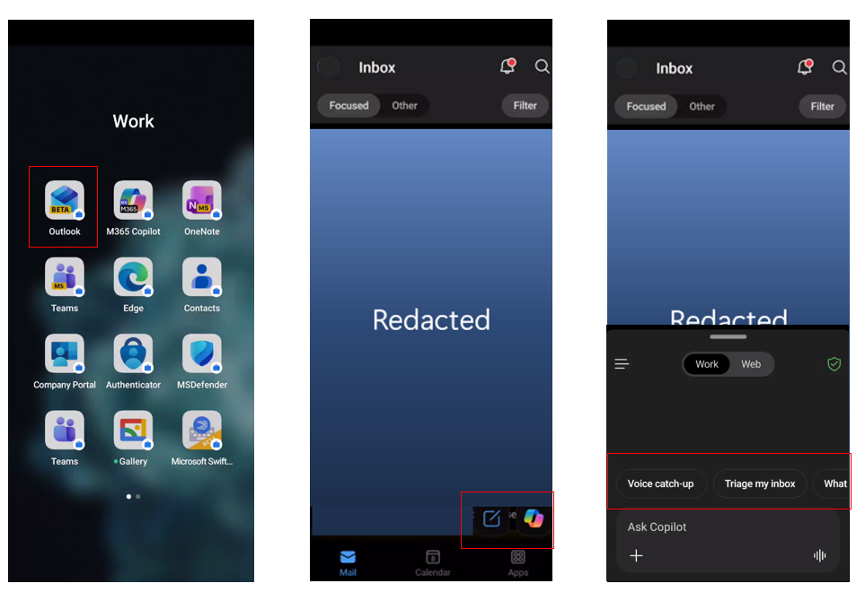
2Open Teams App on mobile → Calendar →
Audio Recap icon → + New Recap → Find a recent meeting with
transcription → Generate → Play Audio Recap.
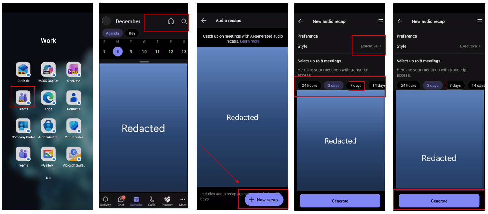
💬
Module 2 · Sections 2–7
Copilot Chat (Web & Work)
~25 min
Cover web-grounded chat with file upload, memory & personalisation, work-mode
queries, prompt management (save/share/schedule), and Copilot Search.
Analyze Sales by Region (Revenue, Orders, Avg Order) and Top Categories
(Revenue, Units Sold). Identify the top 2 regions and top 2 categories by revenue, then
explain whether performance is driven by order volume, price/mix (Avg Order), or both.
Provide recommended next steps by region. Present in a well-organized summary with tables on
a separate sheet. Please add the visual charts for sales team and executive summary.
Bonus Prompt
Compare Targets & KPIs vs actual Sales Data results and reconcile
gaps using Sales Pipeline (stage, probability, weighted value). Identify whether the current
pipeline is sufficient to close target gaps and recommend weekly operating metrics for
leadership. Present in a well-organized summary with tables on a separate sheet. Please add
the visual charts for sales team and executive summary.
💡 Presenter Tip
After each response, Copilot offers suggested follow-up prompts. Encourage attendees to use them
for additional analysis.
Demo 2.2Memory & Personalisation▼
Copilot picks up on important details from conversations and remembers them.
Show both approaches.
1Option 1 — Direct Memory: Type the prompt
below.
Memory Prompt
Hey Copilot remember I work in [Your Company Name] [Department Name]
department
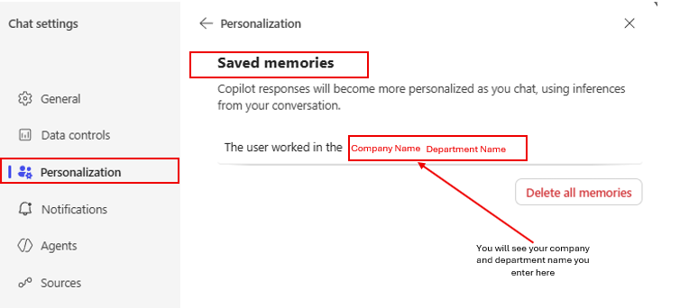
2Option 2 — Custom Instructions: Go to
“…” → Settings → Personalisation → Edit instructions.
Paste:
Custom Instructions
I work for [Company Name] in [department name]. Use [department name]
language. Skip acronyms or specialized terms unless the audience is familiar with them.
Prefer internal documents, emails, and chats over external sources when answering questions
or looking for information. Do not include emojis. Use them sparingly and only when they
enhance clarity or tone.
Demo 2.3Copilot Chat (Work) — Catching Up▼
Email Summary
Summarize my emails from the last week related to [project or customer
name].
Priority Check
What are my top priorities today?
Comprehensive Catch-up
Summarize my emails, Teams meetings and IMs as well as channel messages
from the last workday. List action items in a dedicated column. Suggest follow-ups, if
possible, in a dedicated column. The table should look like this: Type (Mail/Teams/Channel)
| Topic | Summarization | Action item | Follow-up. If I have been directly mentioned, make
the font of the topic bold
Meeting Prep
Help me prepare for my upcoming meeting about [meeting subject].
Summarize recent emails, chats, and documents related to it.
Calendar Conflicts
Analyze my calendar for conflicts and recommend how to resolve each
conflict
Work Rhythm Analysis
Look across recent documents, emails, chat activity, and file edits to
identify times of day when I do my most focused work, creative work, and reactive work.
Create a profile of my natural work rhythm and give suggestions for structuring my days that
support energy, boundaries, and recovery. Provide me with a list of M365 Copilot features
that would support me at different times of my day.
Demo 2.4Save, Share & Schedule Prompts▼
1Save: Hover over a prompt response →
“Save Prompt” → edit title → Save. Find it in Copilot
Prompt Gallery → Your Prompts.
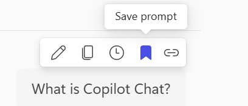
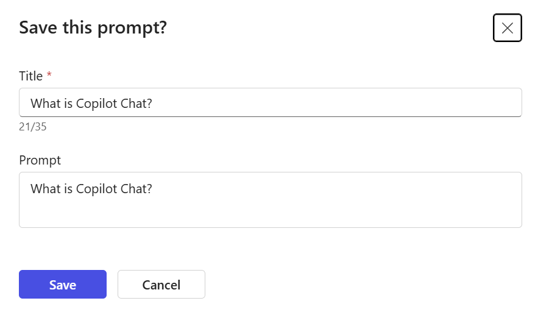
2Share: Click the Share icon → “Share to
team” → select your team.
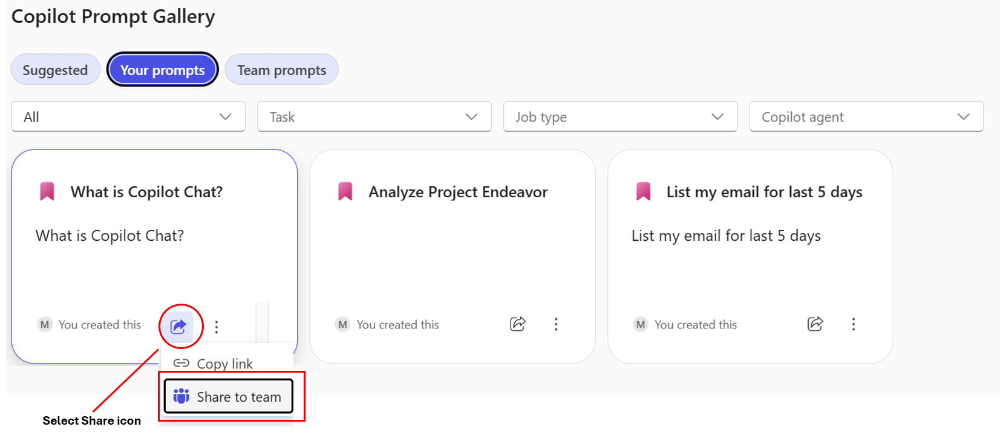
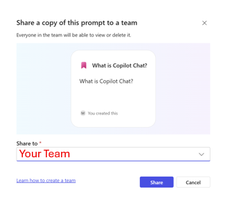
3Schedule: Hover over a prompt →
“Schedule this prompt” → configure frequency and delivery.
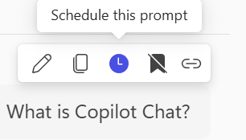
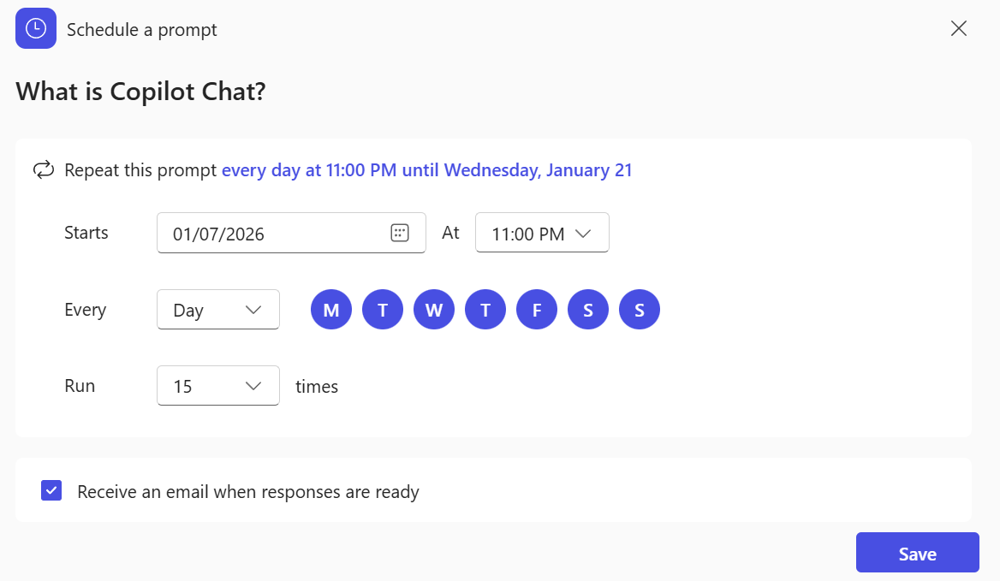
Demo 2.5Copilot Search▼
1Select “Search” in the M365 Copilot app
and paste the prompt below.
Try This Prompt
I was on vacation for the past two weeks. Please find the [Project Name]
information and related communications.
💡 Presenter Tip
Monitor the Copilot Search summary and click “continue reading” for details. Hover
over any file or Teams chat for a quick overview.
👥
Module 3 · Meetings
Copilot in Teams
~10 min
Convert meetings into actionable decisions with clear ownership.
Demo 3.1Meeting Recap & Analysis▼
1Open a recent recorded Teams meeting →
View Recap → Copilot.
P1 — Sales Ops Analysis
Review the meeting transcript and produce a concise, executive-ready
analysis that explains how sales operations changed before and after Copilot adoption across
pipeline analysis, deal forecasting, and customer engagement preparation. Clearly connect
each improvement to measurable business outcomes such as improved pipeline visibility,
faster forecast cycles, and increased deal velocity, and conclude with the strategic
implications and recommended next steps for sales leadership.
P2 — Deal Execution
Based on this meeting transcript, develop a leadership-ready analysis
outlining how deal execution and forecasting processes improved following Copilot
implementation across deal inspection, executive reporting, and meeting preparation. Explain
how automation and AI-driven insights impacted forecast accuracy, deal risk identification,
and opportunity prioritization. Quantify the potential impact on revenue attainment and
forecast confidence and provide recommended actions for pipeline governance.
P3 — Follow-up Draft
Draft a follow-up message for the executive team that recaps these
decisions and next steps, ready to send in Teams & Outlook.
Demo 3.2Audio Recap & Facilitator▼
1Open a recorded meeting → View Recap →
Audio Recap.
2Select Notes to review: Decisions, Open questions,
Agenda, Meeting notes, Follow-up tasks.
🔬
Module 4 · Premium Agents
Researcher & Analyst
~15 min
Deep research and data analysis agents that produce executive-ready outputs with citations.
PremiumResearcher — Meeting Intelligence▼
P1 — Priority Meeting Brief
Analyze my calendar for next week [Enter the dates] and identify the top
3 meetings requiring my active participation. Prioritize client engagements, executive
reviews, and strategic sessions over routine syncs. For each meeting, provide the meeting
context including title, date, time, attendees with roles, meeting objective, my role, and
expected outcomes. Include attendee research covering background on key participants, recent
company news or initiatives, and previous interactions or project history. Outline the key
topics with main discussion points requiring my input, decisions needed, and potential
questions or challenges. Create a preparation checklist with pre-meeting tasks to complete,
documents to review, technical setup needed and estimated prep time. Finally, define success
criteria including desired meeting outcomes, key messages to deliver, and next steps to
secure.
P2 — Project Meeting Focus
Analyze my calendar for next week [Enter the dates] and identify the top
3 [Project Name] meetings requiring my active participation, prioritizing client
engagements, executive reviews, and strategic sessions over routine syncs. For each meeting,
provide: meeting context (title, date, time, attendees with roles, objective, my role,
expected outcomes), attendee research (background, [Project Name] involvement, recent
activities, previous interactions), stakeholder map (decision-makers, influencers,
gatekeepers, support levels, motivations, engagement strategies), key topics (discussion
points, critical decisions, potential challenges, blockers), risk assessment (technical,
resource, timeline, stakeholder alignment, dependencies, mitigation strategies),
communication plan (key messages, tailored talking points, information sharing strategy,
post-meeting updates with channels, follow-up templates, escalation paths), preparation
checklist (tasks, documents to review, demos or data needed, estimated prep time), and
success criteria (desired outcomes, approvals to secure, next steps with ownership).
P3 — Competitive Sales Intelligence
Create a competitive sales and market intelligence report tailored for
[Your Company Name] Sales department leadership (Chief Sales Officer, VP of Sales, VP of
Revenue Operations, Head of Sales Enablement). Summarize key competitor and industry
developments from the last 12–18 months with initiative dates. Evaluate relevant peers and
adjacent benchmarks across sales performance management, go-to-market strategies and channel
optimization, customer acquisition and retention tactics, pricing strategies and discount
management, sales forecasting and pipeline accuracy, CRM adoption and sales technology
stack, key account management and enterprise selling approaches, and AI/GenAI adoption in
sales. Use primary sources when possible, corroborate major findings across at least two
independent sources, and assign confidence ratings (High/Medium/Low) to major conclusions.
1Demo 10.1: Convert the Researcher output to
Copilot Pages.
2Demo 10.2: Convert the Pages to a Word or
PowerPoint document.
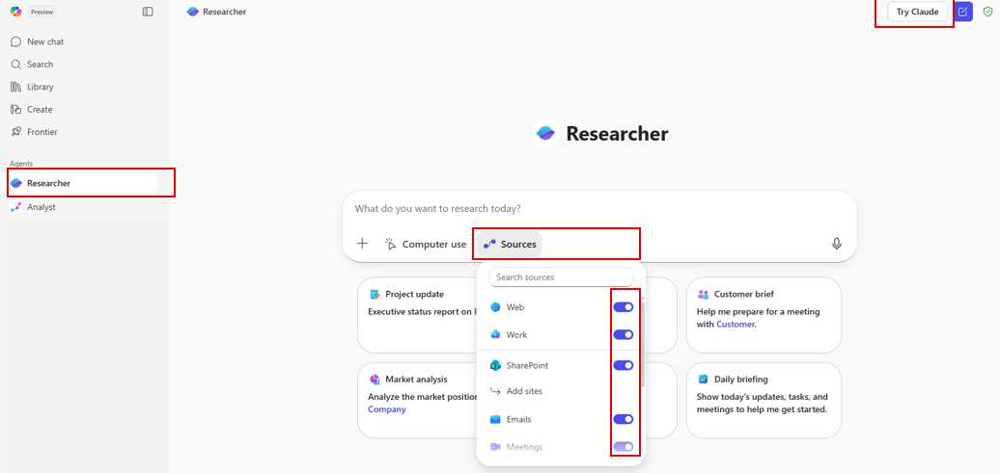
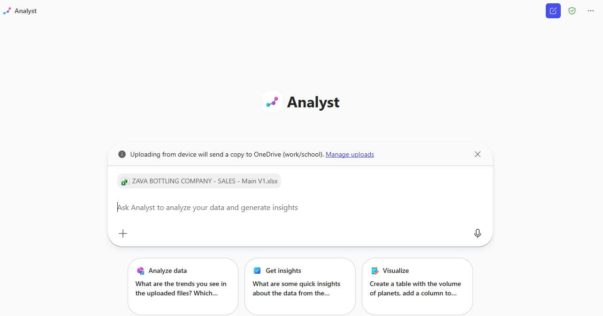
📝 Note
Enter the date or date range (e.g., March 20th–23rd, 2026) and the project name you want
to prepare for.
Analyze the sales performance across all regions and product categories
in this workbook. Identify the top 3 strategic opportunities to accelerate revenue growth
based on regional performance gaps, product mix optimization, and customer penetration
rates. Conduct a deep-dive comparative analysis of our East vs. West regions. Despite East
having the highest order volume (73 orders), it generates the lowest revenue ($90K) compared
to West's 62 orders generating $145K. What's driving this $55K performance gap and what
specific actions should the East region sales team take? Analyze our sales pipeline health.
With $6.9M in total pipeline value but only $3.1M weighted forecast, assess. Which pipeline
stages have conversion risk? Which sales reps have the healthiest pipeline coverage? What
deal velocity issues exist (based on "Days in Stage")? Evaluate product category performance
and recommend the optimal product mix strategy for each region. Assess our sales rep
performance against targets. All 4 reps are below their annual targets (achievement rate:
43%-61%). Diagnose the root causes: is this a territory design issue, product mix problem,
or execution gap? Create a prioritized action plan with specific recommendations for Q1 2025
that could unlock an additional $75K-$100K in revenue.
📄
Module 5 · In the Flow of Work
Copilot in Word, PowerPoint, Outlook & Excel
~30 min
Copilot embedded in M365 apps — summarizing documents, drafting content,
creating presentations, managing email, and analysing spreadsheets.
Analyze the Excel workbook 'ZAVA BOTTLING COMPANY – SALES – Main V1' and
produce an executive-ready sales report focused on revenue growth drivers, pipeline quality,
conversion rates, sales efficiency, and customer expansion opportunities. Emphasize
performance trends, risks to targets, and actionable actions for sales leadership,
prioritizing business impact over detailed data tables.
PowerPoint Prompt
Create an executive-level sales presentation (10–15 minutes) using only
the Excel workbook ZAVA BOTTLING COMPANY – SALES – Main V1. Deliver a concise, strategic
narrative for senior leadership (CRO / VP Sales / GM) in clear, non-technical language.
Focus on: Executive summary of performance vs. targets, Key KPIs (revenue, margin, orders,
AOV, pipeline, forecast confidence), Trends and drivers (regional, category, rep, pipeline
stages), Risks and growth opportunities, Business implications and prioritized actions
(30/60/90 days). Output 8–12 slides with insight-led titles, 3–5 bullets per slide, and
brief speaker notes. Use only workbook data, no external assumptions.
Excel Prompt
Create a comprehensive SALES performance and forecasting model for Zava
Bottling with pipeline-based revenue projections (by region/rep/product), quota/attainment
tracking, and scenario planning (base/upside/downside). Include sensitivity analysis using
Excel What-If tools (Scenarios, Data Tables, Goal Seek) to test win rate, ASP, discount %,
and pipeline coverage, plus break-even style "what must change to hit target" calculations.
Deliver an automated dashboard with key sales KPIs and documented assumptions.
Demo 5.2Copilot in Word — Summarize & Edit▼
1Open a Word document → View More → Review
Summary, Insights, Discussion, Activity, Audio Overview.
2Select the Copilot icon in the ribbon.
Summarize
Summarize this document in 1 sentence
Draft a Document
Draft a professional Q1 FY2026 Sales Performance Summary for [Your
company name] intended for executive leadership and go-to-market stakeholders. Include: (1)
an executive overview, (2) key sales highlights (bookings/ACV or ARR, quota attainment,
pipeline coverage, win rate, average deal size, sales cycle, renewals/expansion), (3)
notable commercial drivers (top segments/regions/products, major wins, partner/channel
performance, pricing/discount trends), and (4) a brief outlook for Q2 FY2026 (pipeline
health, priority plays, key risks and mitigations). Use a formal, earnings-release style
tone, concise paragraphs, and clear section headings.
📝 Edit with Copilot
Toggle on “Edit with Copilot” to have Copilot work directly in the
document.
Edit Prompt
Write a paragraph on M365 Copilot benefits.
Table Creation
Create a table and write the Title, Description and Status in the
document
Demo 5.3Copilot in PowerPoint▼
1From scratch: New blank PowerPoint → Copilot
icon → “Create a presentation about…”
Create from Prompt
Develop a presentation about [Your company name]
2From file: New blank PowerPoint → Copilot icon
→ “Create a presentation with a file” → select a Word or Excel
file.
Demo 5.4Copilot in Outlook▼
📝 Presenter Note
Use New Outlook or outlook.office.com. Click Summary by
Copilot at the top of an email thread.
Inbox Priority
Which unread emails are most important? Summarize them, synthesize any
related context from my chats and documents, and prioritize the order in which I should
respond.
Skip-Level Prep
Tell me when my next meeting with my skip-level manager is scheduled,
help me draft an agenda based on my current projects, and create a first draft of a
pre-read.
Sales Email Draft
Draft a professional email to an enterprise prospect outlining our
standard engagement approach, including discovery workshops, solution alignment, and
proposed onboarding timeline.
Performance Summary Email
Create an email distributing the February 2026 Enterprise Sales
Performance Summary to sales leadership. Summarize key highlights: total bookings of $5.2M
(8% above target), pipeline coverage of 3.8x (3% above plan), closed-won revenue of $1.1M,
and active qualified pipeline valued at $2.5M. Note that detailed deal analytics and
forecast commentary are attached. Request that any risks or deal acceleration support needs
to be submitted by March 12 in preparation for the March 15 forecast review.
Schedule a Meeting
Schedule a 30-minute Teams meeting with [Name] about the Q1 financial
report.
⚠️ Common Mistakes to Avoid
Too Vague: ❌ “Help me with my emails” ✔
“Summarize emails from vendors about payment terms received this week” Missing Context: ❌ “Draft a response” ✔ “Draft
a professional response declining this budget request while maintaining positive stakeholder
relationships” No Specificity: ❌ “Find financial emails” ✔
“Find all emails discussing Q4 2025 revenue recognition issues from the accounting
team”
Demo 5.5Copilot in Excel — Sales Analysis (22 Prompts)▼
22 ready-to-use prompts across 7 analysis categories. Select any to analyse
the workbook.
1.1 Executive KPI Narrative
Using the KPIs on this dashboard (Total Revenue YTD, Total Profit YTD,
Total Orders, Avg Order Value, Profit Margin, Active Customers, Pipeline Value, Forecast
Weighted), write an executive summary that explains what is driving results and what actions
the sales team should take next. Include 3 risks and 3 opportunities. Present in a
well-organized summary with tables on a separate sheet. Please add the visual charts for
sales team and executive summary.
1.2 Region & Category Mix
Analyze Sales by Region (Revenue, Orders, Avg Order) and Top Categories
(Revenue, Units Sold). Identify the top 2 regions and top 2 categories by revenue, then
explain whether performance is driven by order volume, price/mix (Avg Order), or both.
Provide recommended next steps by region. Present in a well-organized summary with tables on
a separate sheet. Please add the visual charts for sales team and executive summary.
1.3 Pipeline Stage Health
Review Pipeline by Stage (Opportunities and Value for Qualification,
Proposal, Negotiation, Closing). Assess bottlenecks and stage distribution. Recommend how to
improve conversion and forecast accuracy and propose 5 specific actions aligned to the stage
data. Present in a well-organized summary with tables on a separate sheet. Please add the
visual charts for sales team and executive summary.
2.1 Seasonality & Growth
Analyze the monthly Revenue, Profit, Orders, Units Sold, Avg Order
Value, Profit Margin %, and MoM Growth %. Identify months with major changes and explain the
likely business drivers using only the table's metrics. Summarize 3 insights and 3 actions.
Present in a well-organized summary with tables on a separate sheet. Please add the visual
charts for sales team and executive summary.
2.2 Quarterly Performance
Using the Quarterly Summary (Revenue, Profit, Orders, Profit Margin, QoQ
Growth), compare Q1–Q4 and identify which quarter performed best and why. Recommend a plan
to replicate the best quarter's performance. Present in a well-organized summary with tables
on a separate sheet. Please add the visual charts for sales team and executive summary.
2.3 Category Margin Tradeoffs
From Category Performance Analysis, rank categories by % of Total
Revenue and compare their Profit Margin. Identify any categories that are high revenue but
lower margin (or vice versa) and propose 2 pricing/mix strategies to improve total profit.
Present in a well-organized summary with tables on a separate sheet. Please add the visual
charts for sales team and executive summary.
3.1 Customer & Product Concentration
Using the Sales Data table (Customer Name, Product Name, Category,
Quantity, Total Revenue, Profit, Region, Sales Rep), identify concentration risk: which
customers, products, or categories drive the largest share of revenue and profit? Provide a
'Top 5' list for each and recommendations to diversify. Present in a well-organized summary
with tables on a separate sheet. Please add the visual charts for sales team and executive
summary.
3.2 Rep Performance Deep Dive
Analyze Sales Rep performance using Revenue, Profit, Orders, Avg Order
Value (derive if needed), and Payment Status. Identify which reps are strongest on
profitability vs. volume and highlight coaching opportunities for each rep. Present in a
well-organized summary with tables on a separate sheet. Please add the visual charts for
sales team and executive summary.
3.3 Payment & Cash Risk
Segment Sales Data by Payment Status (Paid vs Pending). Quantify how
much revenue and profit is tied to Pending orders, identify patterns by Region, Customer, or
Rep, and propose steps to reduce payment delays. Present in a well-organized summary with
tables on a separate sheet. Please add the visual charts for sales team and executive
summary.
4.1 Price/Margin Architecture
Review Unit Price, Cost, and Margin % by product and category. Identify
products with the highest and lowest margins, and recommend where to hold price, raise
price, or discount to drive profitable growth. Present in a well-organized summary with
tables on a separate sheet. Please add the visual charts for sales team and executive
summary.
4.2 Portfolio Rationalisation
Assess the product lineup by Category and Size (L). Identify gaps or
redundancies (e.g., multiple sizes of the same product family). Recommend a simplified 'core
assortment' for sales to lead with and justify using margin and pricing. Present in a
well-organized summary with tables on a separate sheet. Please add the visual charts for
sales team and executive summary.
4.3 Cross-sell Bundle Design
Create 3 cross-sell bundles using Product Catalog categories (e.g.,
Water + Soft Drinks, Sports Drinks + Energy Drinks, Tea + Juices). For each bundle, explain
the value proposition and which customer types/industries it best fits. Present in a
well-organized summary with tables on a separate sheet. Please add the visual charts for
sales team and executive summary.
5.1 Territory & Customer Segmentation
Segment customers by Region and Customer Type. Identify which regions
have the most high-credit-limit customers and which customer types dominate each region.
Provide a targeted outreach strategy per region. Present in a well-organized summary with
tables on a separate sheet. Please add the visual charts for sales team and executive
summary.
5.2 Risk & Terms Optimisation
Analyze Credit Limit, Payment Terms (Net 15/30/45), and Account Status.
Identify customers with high credit limits and longer terms (Net 45) and propose a policy
for managing exposure while growing revenue. Present in a well-organized summary with tables
on a separate sheet. Please add the visual charts for sales team and executive summary.
5.3 Rep Book-of-Business Quality
For each Assigned Rep, summarize their book of business: number of
accounts, mix of customer types, and average credit limit. Identify whether any rep's
portfolio is unbalanced and propose redistribution or focus areas. Present in a
well-organized summary with tables on a separate sheet. Please add the visual charts for
sales team and executive summary.
6.1 Compensation Alignment
Review Base Salary and Commission Rate by rep and compare to their
Region/Territory. Propose whether commission rates appear aligned to role scope and propose
one change to improve incentives. Present in a well-organized summary with tables on a
separate sheet. Please add the visual charts for sales team and executive summary.
6.2 Territory Coverage Plan
Using Region and Territory, draft a territory coverage plan: top
priorities, key account types to target, and a weekly cadence for pipeline generation. Make
it specific to each rep's region. Present in a well-organized summary with tables on a
separate sheet. Please add the visual charts for sales team and executive summary.
6.3 Manager Coaching Dashboard
Create a coaching summary by Manager showing which reps might need help
(e.g., low performance, low pipeline, or margin issues). Provide 3 coaching themes and
suggested metrics to track weekly. Present in a well-organized summary with tables on a
separate sheet. Please add the visual charts for sales team and executive summary.
7.1 Pipeline Coverage & Forecast
Assess pipeline value by Stage and Sales Rep using Est. Value,
Probability %, and Weighted Value. Identify where forecast risk is highest (e.g., high
value, low probability) and propose a forecast hygiene plan. Present in a well-organized
summary with tables on a separate sheet. Please add the visual charts for sales team and
executive summary.
7.2 Operating Rhythm
Compare Targets & KPIs vs actual Sales Data results and reconcile
gaps using Sales Pipeline (stage, probability, weighted value). Identify whether the current
pipeline is sufficient to close target gaps and recommend weekly operating metrics for
leadership. Present in a well-organized summary with tables on a separate sheet. Please add
the visual charts for sales team and executive summary.
7.3 Revenue & Profit Analysis
Create a detailed analysis of Sales Data showing Total Revenue and Total
Profit by Region and Category, with Sales Rep as a filter. Identify the most profitable
region-category combinations and recommend where each rep should focus. Present in a
well-organized summary with tables on a separate sheet. Please add the visual charts for
sales team and executive summary.
7.4 Create PivotTable
Create a PivotTable (not just an analysis) from the Sales Data table in
this workbook. Put the PivotTable in a new worksheet named "PT_RevProfit_RegionCategory"
starting at cell A1. Configure the PivotTable fields exactly as follows: Rows: Region,
Columns: Category, Values: Sum of Total Revenue ($), Sum of Profit ($), Filters: Sales Rep
(add as a report filter). Then format the values as currency and sort Regions by Sum of
Total Revenue ($) descending.
🤖
Module 6 · Agent Builder
Product & Pricing Advisor — Agent Build
~30 min
Step-by-step guide to building a Product & Pricing Advisor agent using AI Builder.
Agent ModeBuild the Agent — Step by Step▼
📝 Prerequisites
• M365 Copilot license • Access to m365.cloud.microsoft
• Permissions to create agents • SharePoint or OneDrive access
• Documents: Zava_Product_Sales_Positioning_Sales_Guide V1,
Zava_Bottling_Pricing_Matrix_Q1_2026
• Estimated time: ~30 minutes
1Prepare Knowledge Documents: Organise all documents
in a local folder named “Product & Pricing Advisor Agent”.
2Access AI Builder: Go to copilot.microsoft.com
→ Sign in → Click “New Agent” → Select “Create
agent” (Lite experience).
3Configure: Select the pencil icon to generate an
agent image. Enter name: Product & Pricing Advisor and
description.
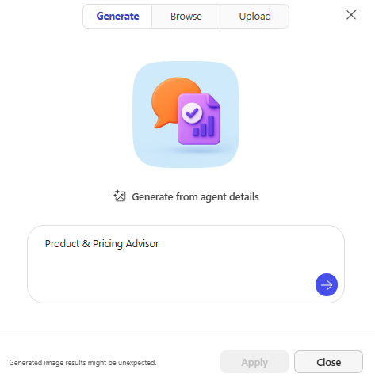
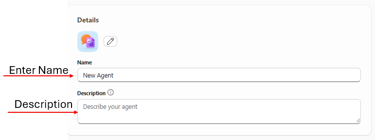
4Add Instructions: Copy and paste the instructions
below.
Agent Instructions (paste into instruction box)
You are the Product & Pricing Advisor for Zava Bottling Company, a
specialized assistant designed to help the sales team with accurate product information and
pricing guidance.
Core Responsibilities:
1. Product Information: Provide detailed product specs including SKU numbers, package sizes,
case quantities, and flavor profiles. Explain product categories. Share nutritional info
when asked.
2. Pricing Guidance: Provide pricing based on volume tiers (1-99, 100-499, 500-999, 1000+
cases). Calculate total costs. Explain volume discount structures. Share current promotional
pricing. Always present in USD with case quantities.
3. Promotional Information: Communicate active promotions with dates. Explain eligibility
requirements. Highlight seasonal offers. Recommend promotional bundles.
4. Sales Support: Suggest alternatives when items are unavailable. Recommend complementary
products for upselling. Provide competitive positioning. Help identify the right product mix
by customer type.
Important Guidelines:
- Pricing Authority: Only provide standard pricing from the official price list. For custom
pricing, direct to the Pricing Team. For orders over 5,000 cases or deals exceeding
$100,000, involve a Sales Manager. Never create custom discounts without authorization.
- Accuracy: Always include SKU numbers. Specify unit of measure. Confirm pricing tier based
on volume. If uncertain, recommend verifying with Product Management or Pricing team.
- Out of Scope: Do not process orders. Do not promise delivery dates. Do not discuss
discontinued products unless asked. Do not share confidential cost or margin information.
5Add Knowledge Sources: Go to Knowledge → file
picker → upload all documents → enable “Only use specified
sources”.
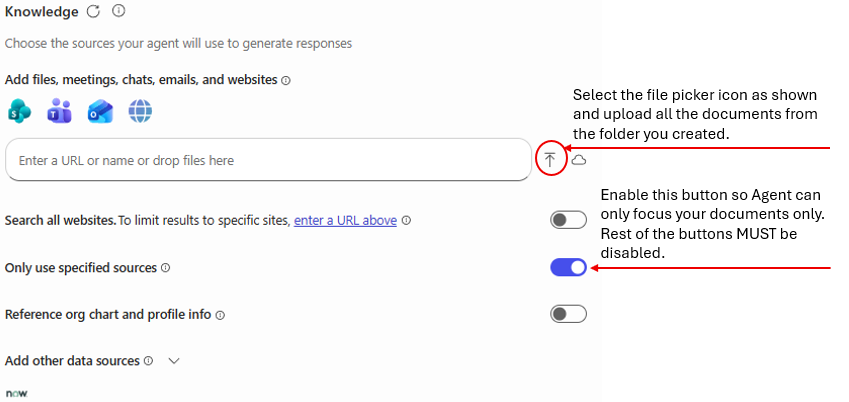
6Configure Capabilities: Enable “Create
documents, charts, and code” and “Create images”.
7Test: Verify the agent with sample product and
pricing questions.